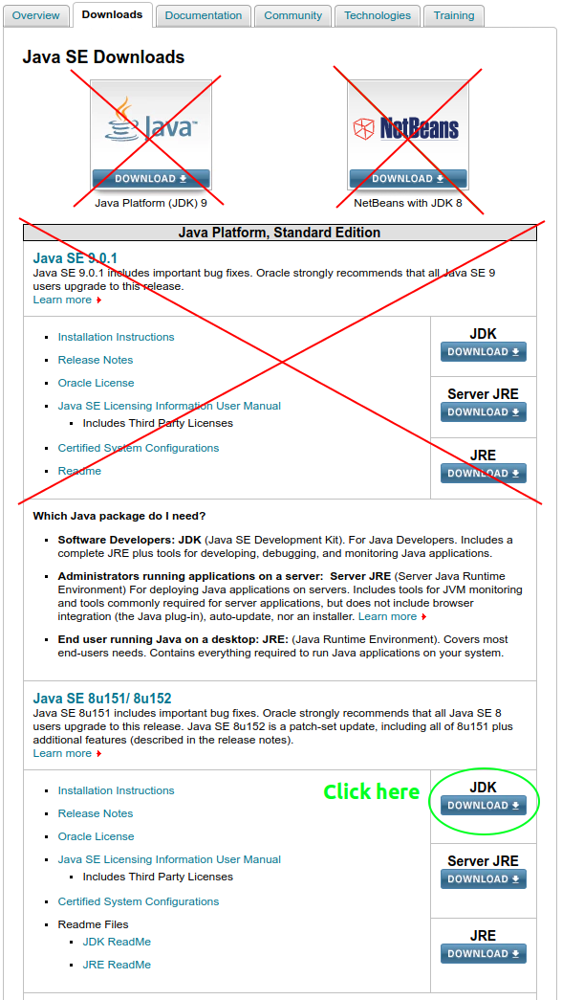
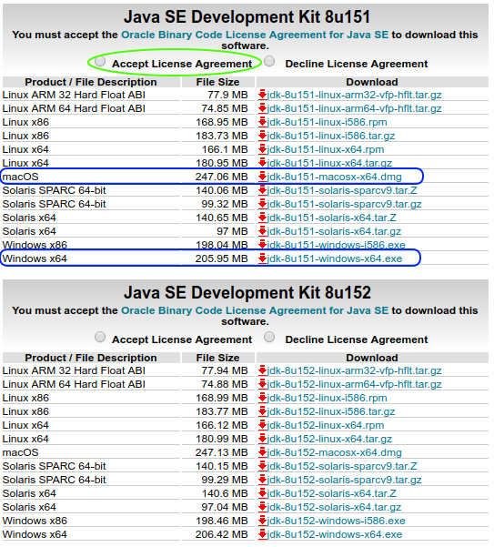
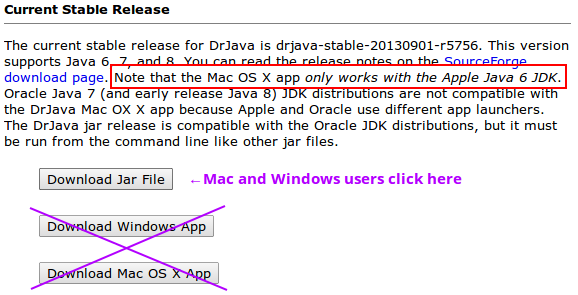
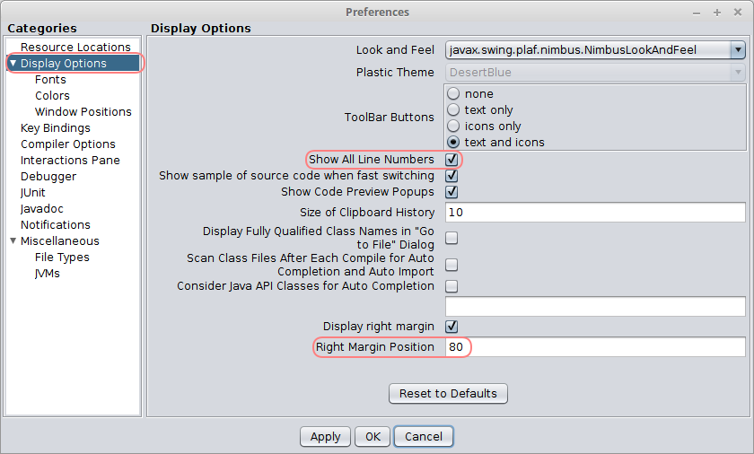
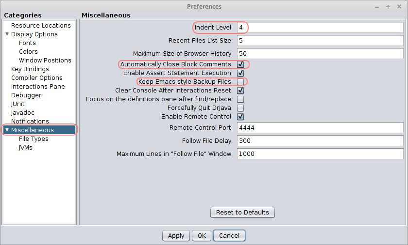

CS 149: Introduction to Programming
Step 1: JDK
In order to compile Java programs on your own computer, you will first need to install the  Java Development Kit from Oracle's website.
Do NOT install the latest version -- we will be using Java SE 8 this semester.
Java Development Kit from Oracle's website.
Do NOT install the latest version -- we will be using Java SE 8 this semester.
| Figure 1 | Figure 2 | |
|---|---|---|
|  |  |
Step 2: DrJava
We will use  DrJava as the primary development environment throughout the course.
Windows and Mac users should download the Jar file instead of the outdated apps.
There is no need to install the Jar file; simply double click it to run DrJava.
Mac users may need to override security settings for the Jar file.
Linux users may need to make the Jar file executable (i.e.,
DrJava as the primary development environment throughout the course.
Windows and Mac users should download the Jar file instead of the outdated apps.
There is no need to install the Jar file; simply double click it to run DrJava.
Mac users may need to override security settings for the Jar file.
Linux users may need to make the Jar file executable (i.e., chmod 755).
| Figure 3 |
|---|
|  |
Step 3: Settings
Once you get the JDK and DrJava up and running, you should change the following settings from the "Edit –> Preferences" menu. Under "Display Options", check "Show All Line Numbers" and change the "Right Margin Position" to 80.
| Figure 4 |
|---|
|  |
Then under the "Miscellaneous" category, change the "Indent Level" to 4 (i.e., four spaces). The other two settings are for convenience when editing programs over long periods of time.
| Figure 5 |
|---|
|  |